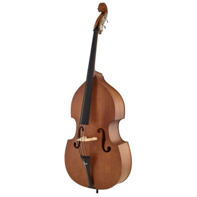

Скрипка
Скрипка - это струнный музыкальный инструмент, который является частью семейства скрипок, включающего также альту, виолончель и контрабас. Скрипка является одним из наиболее известных и широко используемых инструментов в музыкальной истории.
История скрипки насчитывает несколько веков, и она играла ключевую роль в различных музыкальных жанрах, включая классику, джаз, фольклор и современные стили. Скрипка известна своим высоким, кристально чистым звуком, способностью передавать широкий диапазон эмоций и является незаменимым инструментом в оркестре.
Игра на скрипке осуществляется при помощи смычка, который проходит над струнами, вызывая их вибрацию и создавая красивый звук. Музыканты, известные как скрипачи, мастерски используют лады и технику смычка для производства разнообразных мелодий, гармоний и соло.
Скрипка широко используется как сольный инструмент, так и в составе оркестра, камерных групп и других ансамблей. Ее уникальный звук и способность выразить глубокие эмоции делают ее одним из самых восхитительных музыкальных инструментов.